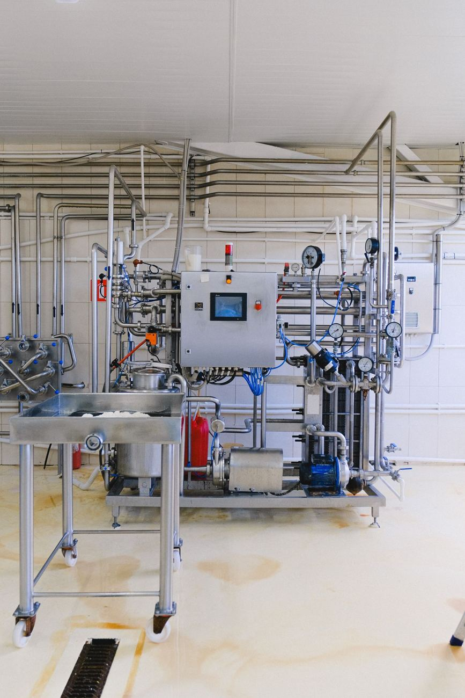

Diagnóstico contra la norma
Revisamos qué tiene y qué le falta frente a ISO 9001 o la norma de su industria.
Listos para la auditoría.
Documentamos sus procesos, preparamos a su personal, hacemos auditorías internas y lo acompañamos hasta la auditoría de certificación.

Si alguna de estas situaciones le suena, podemos ayudarle.
Tomamos lo que su planta necesita: puede ser todo o solo una parte.
Revisamos qué tiene y qué le falta frente a ISO 9001 o la norma de su industria.
Procedimientos, instructivos y registros claros y útiles.
Su personal entiende el sistema y su papel en él.
Revisamos todo como lo haría el auditor, antes de que llegue.
Acciones correctivas para las no conformidades encontradas.
Estamos con usted durante la auditoría de certificación.
Con el mismo equipo de principio a fin.
Medimos la brecha contra la norma.
Construimos o actualizamos el sistema.
Probamos el sistema y corregimos.
Lo acompañamos en la auditoría final.

Platiquemos sin compromiso y le decimos cómo podemos ayudarle.